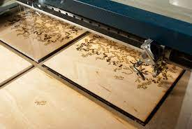

Introduction of Laser Cutting:
Laser cutting is a versatile and precise technology used for cutting a wide range of materials with high accuracy. It utilizes the focused energy of a laser beam to cut through various materials, producing clean and precise edges. This technology finds extensive applications in industries such as manufacturing, aerospace, automotive, electronics, and more.
Here's an introduction to the key aspects of laser cutting:
Basic Working Principle:
Laser cutting involves the use of a laser, which stands for "Light Amplification by Stimulated Emission of Radiation." The process begins with a laser generator that produces a highly concentrated and focused beam of light. This laser beam is then directed through a series of mirrors or fiber optics to the cutting head, where it is further focused and guided onto the material to be cut.
Materials Suitable for Laser Cutting:
Laser cutting can be applied to a wide variety of materials, including metals (such as steel, aluminum, and titanium), plastics, wood, fabric, glass, ceramics, and more. The choice of material depends on its compatibility with the specific type of laser used and the desired end product.
Advantages of Laser Cutting:
- Precision and Accuracy:
Laser cutting provides high levels of precision, allowing for intricate and detailed cuts with minimal material waste. - Versatility:
It can cut a wide range of materials, making it suitable for diverse industries. - Speed and Efficiency:
Laser cutting is a fast and efficient process, enabling rapid production and quick turnaround times. - Minimal Material Contact:
Since there is no physical contact between the laser and the material being cut, there is less wear and tear on equipment, reducing the need for maintenance. - Customization:
Laser cutting allows for the creation of intricate and customized designs, making it ideal for prototyping and small-scale production.
Types of Laser Cutting Machines:
1. CO2 Lasers: Commonly used for non-metallic materials like wood, plastics, and fabrics.
2. Fiber Lasers:Suitable for cutting metals, particularly stainless steel, aluminum, and copper.
3. Nd:YAG Lasers: Used for cutting thicker metals and specialized applications.
- Industrial Manufacturing:
Used for mass production of components and parts. - Prototyping: Ideal for creating prototypes due to its precision and versatility.
- Art and Design: Popular in artistic and creative applications for intricate designs.
- Automotive Industry: Used for cutting various automotive components.
- 5. Medical Devices: Applied in the manufacturing of medical instruments and implants.
Applications:
Laser cutting has become an essential technology in modern manufacturing, enabling the production of intricate and high-quality components across various industries. Advances in laser technology continue to expand its capabilities and applications, making it a crucial tool in the world of precision cutting and fabrication.
Material
- Steel: Carbon steel, stainless steel, and mild steel are commonly cut using laser technology.
- Aluminum: Laser cutting is effective for aluminum alloys used in aerospace, automotive, and other industries.
- Copper: Fiber lasers are often used for cutting copper due to their wavelength absorption properties.
- Brass: Laser cutting provides clean and precise cuts on brass sheets.
Laser cutting is a versatile technology that can be applied to a wide range of materials, spanning various industries. Here's a list of materials that can be successfully manufactured or processed using laser cutting:
Metals:
- Acrylic: Commonly used for signage, displays, and artistic applications due to the high precision achievable with laser cutting
- Polycarbonate: Laser cutting is suitable for creating transparent or colored parts.
- Polyester: Used in textiles and fabrics, laser cutting allows for intricate designs and patterns.
- ABS (Acrylonitrile Butadiene Styrene): Often used in prototyping and manufacturing plastic components.
Plastics:
- Plywood: Laser cutting is popular for creating detailed designs in plywood sheets.
- MDF (Medium-Density Fiberboard): Ideal for crafting intricate shapes and designs.
- Solid Wood: Various types of solid wood can be cut for artistic and functional applications. 
Wood and Derivatives:
- Cardstock: Laser cutting is commonly used for intricate paper cutting for crafts and design projects.
- Corrugated Cardboard: Used for creating custom packaging and prototypes.
- Paperboard: Laser cutting is applied in the production of decorative items and packaging materials.
Paper and Cardboard:
- Fabric: Laser cutting is used in the textile industry to cut patterns for clothing, upholstery, and accessories.
- Leather: Precise cutting of leather for fashion items, accessories, and upholstery.
Textiles:
- Ceramic Tiles: Laser cutting can be applied to create intricate patterns and designs on ceramic tiles.
- Glass: Laser cutting is used for precision cutting of glass for decorative purposes.
Ceramics and Glass:
- Foam: Used in packaging, insulation, and artistic applications.
- Rubber: Laser cutting is employed in the production of gaskets, seals, and custom rubber products.
Foam and Rubber:
- Carbon Fiber: Laser cutting is used for precise shaping of carbon fiber sheets in aerospace and automotive applications.
- Fiberglass: Laser cutting is applied in the production of composite materials for various industries. This list is not exhaustive, and advancements in laser technology continue to expand the range of materials that can be effectively processed. It's essential to consider the specific properties of each material and the capabilities of the laser cutting system when choosing the appropriate method for manufacturing.
Composites:
Power and Speed test
First of all we draw these rectangles in LaserCAD and then we gave different colours to every rectangle and set different powers and speed as shown in pic. ( We have done this test with the collaboration of team Gladiators)

Then we connect the machine to laptop and turn it on. Detail to operate the machine and to connect it to laptop is given in our project of laser cutting.
We have used 3mm Wooden sheet for this test.

All the calculated data of this test is shown in the table below:
| 10 | 20 | 30 | 40 | 50 | 70 | 90 | |
|---|---|---|---|---|---|---|---|
| 30 | ✔ | ✔ | ✖ | ✖ | ✖ | ✖ | ✖ |
| 40 | ✔ | ✔ | ✔ | ✔ | ✖ | ✖ | ✖ |
| 50 | ✔ | ✔ | ✔ | ✔ | ✖ | ✖ | ✖ |
| 60 | ✔ | ✔ | ✔ | ✔ | ✔ | ✖ | ✖ |
| 70 | ✔ | ✔ | ✔ | ✔ | ✔ | ✖ | ✖ |
| 80 | ✔ | ✔ | ✔ | ✔ | ✔ | ✔ | ✖ |
| 90 | ✔ | ✔ | ✔ | ✔ | ✔ | ✔ | ✖ |
Rule and Kerf
When a laser cuts through a piece of material, the laser's own width displaces a little extra material than is specified in the original design. The amount of material that is burned away is known as the kerf in laser cutting

The term "kerf" refers to the width of the material that is removed during a cutting process. In the context of laser cutting, the laser beam removes material as it travels through the workpiece, creating a narrow cut. The width of this cut is known as the laser cutting kerf.
- Laser Beam Focus: The focal point of the laser beam plays a crucial role in determining the kerf width. A tightly focused beam tends to create a narrower kerf.
- Material Thickness: Thicker materials may result in a wider kerf due to the increased energy required to cut through the material.
- Material Type: Different materials have different properties and respond differently to laser cutting. Some materials may produce a wider or narrower kerf.
- Laser Power and Speed: Adjusting the laser power and cutting speed can impact the kerf width. Higher power and slower speeds may widen the kerf.
- Assist Gases: The type and pressure of assist gases used during laser cutting can also affect the kerf. These gases help remove molten material and debris from the cut.
Several factors can influence the laser cutting kerf:
It's essential to consider the desired precision and tolerances when designing for laser cutting, as the kerf width can affect the final dimensions of the cut parts. Some cutting systems may provide options for fine-tuning these parameters to achieve the desired results.
Kerf Test
First of all we design these strips in LaserCAD and then give speed and power to test kerf in laser machine.
After the test we have calculated the remaining size decreases to 98mm as its actual size is 100mm(10cm). So the kerf is 2mm in this test.
Assemble and Proccess
We are useing AutoCad Software to design our model.
Then, when your design is complete then save your file in DXF format
Now Import your DXF file in LeasrCad software
Carefully see about your Speed and Power. When speed and power section is complete then Click the upper mode option.
Then Add your Machine , Which machine are you useing
Then find your machine, Mind it , when you find the machine that’s time you need to attach your data cable in your laptop and machine
Now , turn your machine
Now go again your LaseCad software and Download your file
you can move your file to set the position for cut it. Then Click the Origin and set your box.
When Everything is okay , then Now you can power on the Laser Button. (When you turn on the laser button , you must have to close the machine door.
Assembly ( without glue and tep)
Assemble with Arduino
Topic : Arduino Car Wheel
- Arduino Uno
- Gear Motor
- Motor Shild
- Switch
- Wear
- 4 wheel
Component

Mainly, This is a car chassis. We draw this chassis in useing AutoCad Software.

Then we cut this model in using Laser cut machine.

Our laser cutter chassis and Arduino board are connected together. This is primarily one of our final project we worked on. Also, the chassis materials for our final project were cut using a laser cutting.


Emergency Stop
In the fast-paced world of industrial and automated systems, prioritizing safety is paramount. Emergency machine stops, also known as E-stops or emergency stops, play a critical role in safeguarding both machinery and personnel from potential hazards. These stops are designed to swiftly and effectively halt the operation of a machine in emergency situations, preventing accidents and minimizing the impact of unforeseen events. As technology advances and automation becomes more prevalent, the need for reliable emergency machine stop mechanisms becomes increasingly apparent. This introduction will delve into the importance of emergency machine stops, their key components, and the role they play in creating a secure and efficient working environment. Join us on a journey to explore the crucial intersection of technology and safety in the realm of industrial automation.
We don’t have any Emergency button in this Laser Cutting machine . When I any problem then directly turn off the main Switch